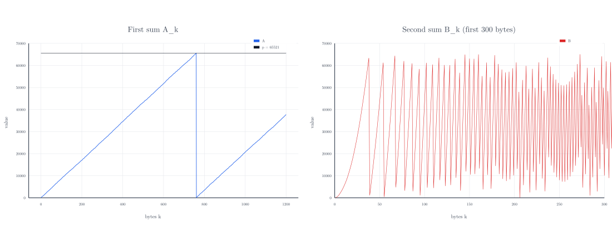
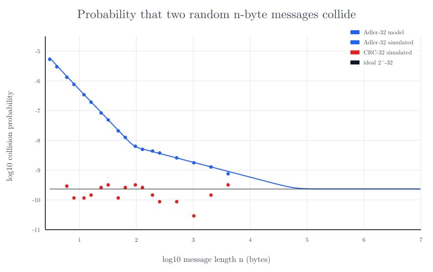
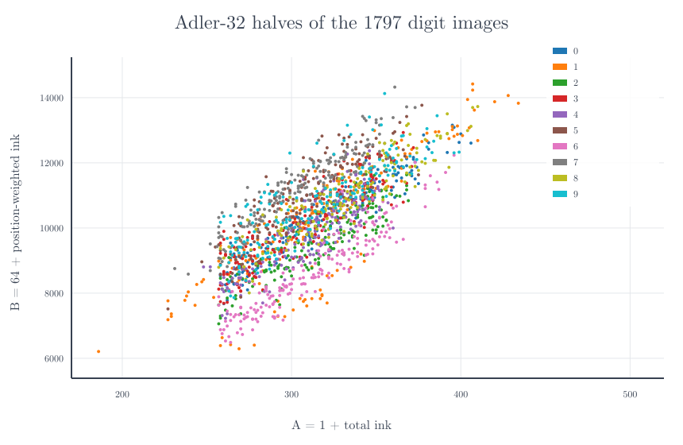

Adler-32: Two Running Sums and What They Miss
Abstract
Adler-32, the checksum in every zlib stream, keeps two running sums modulo the
prime \(p=65521\). We derive its closed form \(B=n+\sum_i(n-i+1)x_i\) and the
zlib constants. These include NMAX = 5552, the longest run that can be summed
before reducing, and the formulas that combine two checksums or slide one along
a window. The difference of two messages' sums gives three detection results.
Every change to one byte is caught. A change to two bytes is missed only when
the bytes are a multiple of \(p\) apart. Some three-byte changes are always
missed, such as "aca" and "bab", which CRC-32 can never confuse. A normal
approximation to the two sums gives a collision model with three regimes. The
probability falls as \(n^{-2}\), then as \(n^{-1/2}\), and only after about 100
000 bytes reaches the \(1/p^2\approx2^{-32}\) of an ideal 32-bit check. Two
hundred and sixty thousand random messages per length confirm the model. The
1797 handwritten digits from dm::datasets::digits() collide three times more
often than random data of the same spread. This is because Adler's two sums are,
in effect, the amount of ink and its vertical position.
Two running sums
Start from \(A_0=1\) and \(B_0=0\). For each byte \(x_k\) of an \(n\)-byte message, update both sums modulo the prime \(p=65521\):
The checksum is \(2^{16}B_n+A_n\). Unrolling the recursion gives a closed form:
\(A\) is a plain byte total and cannot tell "ABCD" from "ABDC". \(B\) weights each byte by the number of positions from it to the end, so reordering changes \(B\).
The modulus is the largest prime below \(2^{16}\). Being prime matters for the theorems below. It costs only 15 unused values per half: there are \(p^2\) possible checksums, against \(2^{32}\) 32-bit values, and \(p^2/2^{32}=0.99955\).
The table checks the library against reference values computed with Python's
zlib.adler32. It also checks the closed form directly, and includes the first
undetected change, which is explained below.
#include <dm/dm.hpp>
namespace alg = dm::algorithms;
int main() {
std::print("| message | n | A | B | Adler-32 | closed-form B | CRC-32 |\n");
std::print("| :--- | ---: | ---: | ---: | :--- | ---: | :--- |\n");
for (std::string m : {"", "a", "abc", "Wikipedia", "ABCD", "ABDC", "aca",
"bab"}) {
const std::uint32_t sum = alg::adler32(m);
std::uint64_t closed = m.size();
for (std::size_t i = 0; i < m.size(); ++i)
closed += (m.size() - i) * static_cast<unsigned char>(m[i]);
std::print("| \"{}\" | {} | {} | {} | 0x{:08X} | {} | 0x{:08X} |\n", m,
m.size(), sum & 0xFFFF, sum >> 16, sum,
closed % alg::adler32_modulus, alg::crc32(m));
}
}| message | n | A | B | Adler-32 | closed-form B | CRC-32 |
|---|---|---|---|---|---|---|
| "" | 0 | 1 | 0 | 0x00000001 | 0 | 0x00000000 |
| "a" | 1 | 98 | 98 | 0x00620062 | 98 | 0xE8B7BE43 |
| "abc" | 3 | 295 | 589 | 0x024D0127 | 589 | 0x352441C2 |
| "Wikipedia" | 9 | 920 | 4582 | 0x11E60398 | 4582 | 0xADAAC02E |
| "ABCD" | 4 | 267 | 664 | 0x0298010B | 664 | 0xDB1720A5 |
| "ABDC" | 4 | 267 | 665 | 0x0299010B | 665 | 0x0A3223C1 |
| "aca" | 3 | 294 | 589 | 0x024D0126 | 589 | 0xC23111AF |
| "bab" | 3 | 294 | 589 | 0x024D0126 | 589 | 0x6B489CCE |
Speed: deferring the modulo
Reducing modulo \(p\) after every byte is the slow part. zlib instead adds up runs of bytes in 32-bit integers and reduces once per run. How long can a run be? Start a run with \(A,B\le p-1\) and feed it \(n\) bytes of 255. After byte \(k\), \(A\le p-1+255k\). Summing these bounds gives
The largest \(n\) satisfying this is zlib's NMAX. algorithms::adler32_update
uses it, and its tests check it against byte-by-byte reduction on all-0xFF
input, the worst case.
#include <dm/dm.hpp>
namespace alg = dm::algorithms;
int main() {
const std::uint64_t p = alg::adler32_modulus, limit = 0xFFFFFFFFULL;
auto bound = [&](std::uint64_t n) {
return 255 * n * (n + 1) / 2 + (n + 1) * (p - 1);
};
std::uint64_t n = 0;
while (bound(n + 1) <= limit) ++n;
std::print("| n | worst-case B | fits in 32 bits |\n| ---: | ---: | :--- |\n");
for (std::uint64_t k : {n - 1, n, n + 1})
std::print("| {} | {} | {} |\n", k, bound(k), bound(k) <= limit);
std::print("\nLargest run: {}; library constant adler32_nmax = {}\n", n,
alg::adler32_nmax);
}| n | worst-case B | fits in 32 bits |
|---|---|---|
| 5551 | 4293208920 | true |
| 5552 | 4294690200 | true |
| 5553 | 4296171735 | false |
Largest run: 5552; library constant adler32_nmax = 5552
Combining and rolling
Both sums are linear in the bytes, so Adler-32 is easy to compose. Let \(M_1\) have sums \((A_1,B_1)\), and let \(M_2\), of length \(m\), have \((A_2,B_2)\). In the concatenation \(M_1M_2\), the \(k\)-th prefix sum inside \(M_2\) is \(A_1-1\) plus \(M_2\)'s own \(k\)-th prefix sum. Summing over \(k\) gives
This is algorithms::adler32_combine. With it, the checksums of separately
compressed pieces can be joined without rereading the data.
Sliding a window of \(w\) bytes one byte along drops \(x_{\text{out}}\), whose weight was \(w\). It adds \(x_{\text{in}}\) with weight 1, and every other byte's weight falls by one, which subtracts one copy of each remaining byte. That gives
So each step takes constant time (adler32_roll, and adler32_windows for
every window). rsync relies on this.
The block below checks the three identities on a text stream: the 891 Titanic
passenger names from dm::datasets::titanic(), one per line.
#include <dm/dm.hpp>
namespace alg = dm::algorithms;
int main() {
const auto titanic = dm::datasets::titanic();
std::string text;
for (std::size_t r = 0; r < titanic.nrows(); ++r)
text += titanic.string_at("Name", r) + "\n";
int update_ok = 0, combine_ok = 0, cuts = 0;
for (std::size_t cut = 0; cut <= text.size(); cut += 997, ++cuts) {
const auto head = text.substr(0, cut), tail = text.substr(cut);
update_ok +=
alg::adler32_update(alg::adler32(head), tail) == alg::adler32(text);
combine_ok +=
alg::adler32_combine(alg::adler32(head), alg::adler32(tail),
tail.size()) == alg::adler32(text);
}
const std::size_t w = 32;
const auto windows = alg::adler32_windows(text, w);
std::size_t roll_ok = 0;
for (std::size_t s = 0; s < windows.size(); ++s)
roll_ok += windows[s] == alg::adler32(text.substr(s, w));
std::print("Stream: {} bytes, Adler-32 0x{:08X}\n\n", text.size(),
alg::adler32(text));
std::print("| identity | checks | agree |\n| :--- | ---: | ---: |\n");
std::print("| adler32_update(adler32(head), tail) | {} | {} |\n", cuts,
update_ok);
std::print("| adler32_combine(head, tail, length) | {} | {} |\n", cuts,
combine_ok);
std::print("| adler32_windows(text, 32) vs direct | {} | {} |\n",
windows.size(), roll_ok);
}Stream: 24917 bytes, Adler-32 0x46408291
| identity | checks | agree |
|---|---|---|
| adler32_update(adler32(head), tail) | 25 | 25 |
| adler32_combine(head, tail, length) | 25 | 25 |
| adler32_windows(text, 32) vs direct | 24886 | 24886 |
The figure follows both sums along the start of that stream. \(A_k\) climbs by about 86 per byte, the mean byte value of the names. \(B_k\) grows quadratically and passes \(p\) after about \(\sqrt{2p/86}\approx 39\) bytes. After that it wraps over and over. A message of 30 bytes therefore uses only part of the range of \(B\), and \(A\) does not reach \(p\) until byte 760. That is the source of the weakness on short messages examined below.
#include <dm/dm.hpp>
namespace alg = dm::algorithms;
int main() {
std::filesystem::create_directories("build");
const auto titanic = dm::datasets::titanic();
std::string text;
for (std::size_t r = 0; r < titanic.nrows(); ++r)
text += titanic.string_at("Name", r) + "\n";
std::vector<double> k, a, b;
std::uint32_t sum = 1;
for (std::size_t i = 0; i < 1200; ++i) {
sum = alg::adler32_update(sum, text.substr(i, 1));
k.push_back(i + 1.0);
a.push_back(sum & 0xFFFF);
b.push_back(sum >> 16);
}
const double p = alg::adler32_modulus;
auto layout = dm::graphics::RLayout::create(1, 2);
layout.add(dm::graphics::RPlot::create().lines(k, a, "A",
dm::RGB{37, 99, 235}, 1.5).lines({0.0, 1200.0}, {p, p}, "p = 65521", dm::RGB{17, 24, 39}, 1.0).y_limits(0, 70000).title("First sum A_k").x_label("bytes k").y_label("value"));
layout.add(dm::graphics::RPlot::create().lines(k, b, "B",
dm::RGB{220, 38, 38}, 1.0).x_limits(0, 300).y_limits(0, 70000).title("Second sum B_k (first 300 bytes)").x_label("bytes k").y_label("value"));
layout.size(1100, 440).save_svg("build/adler32_running_sums.svg");
}
What the checksum can and cannot detect
Corrupt a message by adding \(\delta_i\) to byte \(i\), with \(|\delta_i|\le 255\). The closed form shows that the checksum changes by
An error is missed exactly when both changes vanish modulo \(p\). Three results follow.
- *One byte.* \(\Delta A=\delta_i\) with \(0<|\delta_i|<p\), so every single-byte error is detected.
- *Two bytes* \(i<j\). From \(\Delta A\equiv0\), \(\delta_j=-\delta_i\), since \(|\delta_i+\delta_j|\le 510<p\). Then \(\Delta B=(j-i)\,\delta_i\). Since \(p\) is prime and does not divide \(\delta_i\), this vanishes only when \(p\mid j-i\). A two-byte error is missed only when the bytes are exactly 65521, 131042, … apart and change by opposite amounts. A modulus of \(2^{16}\) would be worse: it misses two-byte errors at distance \(2^{15}\) with \(\delta=\pm128\).
- *Three adjacent bytes.* Take \(\delta=(e,-2e,e)\), a second difference. Then \(\Delta A=0\) and \(\Delta B=3e-4e+e=0\) exactly, for any message. "aca" and "bab" (\(e=1\)) are such a pair. CRC-32 cannot miss this, because its degree-32 generator polynomial detects every error confined to 32 consecutive bits.
For a random replacement of three bytes, the probability of landing on this pattern follows from the distribution of the difference of two uniform bytes, \(P(x-y=k)=(256-|k|)/256^2\):
The experiment uses the 115 008-byte stream of all 1797 digit images, which is longer than \(p\). It applies 300 corruptions of each kind and checks the whole stream each time.
#include <dm/dm.hpp>
namespace alg = dm::algorithms;
int main() {
const auto digits = dm::datasets::digits();
std::string stream;
for (std::size_t r = 0; r < digits.nrows(); ++r)
for (int k = 0; k < 64; ++k)
stream +=
static_cast<char>(digits.double_at("pixel_" + std::to_string(k),
r));
const std::uint32_t adler0 =
alg::adler32(stream), crc0 = alg::crc32(stream);
dm::random::SplitMix64 rng(2026);
auto uniform = [&](std::size_t n) {
return static_cast<std::size_t>(rng.next_u64() % n);
};
auto byte = [&](std::size_t i) {
return static_cast<int>(static_cast<unsigned char>(stream[i]));
};
// Corrupt with a pattern of deltas at the given offsets; e is drawn so every byte stays in 0..255.
auto trial =
[&](const std::vector<std::size_t> & offsets,
const std::vector<int> & weights) {
while (true) {
const std::size_t start = uniform(stream.size() - offsets.back());
std::vector<int> choices;
for (int e = -255; e <= 255; ++e)
if (e != 0) {
bool ok = true;
for (std::size_t t = 0; t < offsets.size(); ++t) {
const int y = byte(start + offsets[t]) + weights[t] * e;
ok = ok && y >= 0 && y <= 255;
}
if (ok) choices.push_back(e);
}
if (choices.empty()) continue;
const int e = choices[uniform(choices.size())];
std::string copy = stream;
for (std::size_t t = 0; t < offsets.size(); ++t)
copy[start + offsets[t]] =
static_cast<char>(byte(start + offsets[t]) +
weights[t] * e);
return std::pair{alg::adler32(copy) != adler0,
alg::crc32(copy) != crc0};
}
};
struct Pattern {
std::string name;
std::vector<std::size_t> offsets;
std::vector<int> weights;
};
const std::vector<Pattern> patterns{
{"one byte, +e", {0}, {1}},
{"two bytes 1 apart, (+e, -e)", {0, 1}, {1, -1}},
{"two bytes 1000 apart, (+e, -e)", {0, 1000}, {1, -1}},
{"two bytes 65520 apart, (+e, -e)", {0, 65520}, {1, -1}},
{"two bytes 65521 apart, (+e, -e)", {0, 65521}, {1, -1}},
{"two bytes 65522 apart, (+e, -e)", {0, 65522}, {1, -1}},
{"two bytes 65521 apart, (+e, +e)", {0, 65521}, {1, 1}},
{"three adjacent bytes, (+e, -2e, +e)", {0, 1, 2}, {1, -2, 1}},
{"three adjacent bytes, (+e, -e, +e)", {0, 1, 2}, {1, -1, 1}},
};
const int trials = 300;
std::print("Stream: {} bytes, {} corruptions per pattern\n\n",
stream.size(), trials);
std::print("| corruption | Adler-32 detects | CRC-32 detects |\n| :--- | ---: | ---: |\n");
for (const auto &pattern : patterns) {
int adler = 0, crc = 0;
for (int t = 0; t < trials; ++t) {
const auto[a, c] = trial(pattern.offsets, pattern.weights);
adler += a;
crc += c;
}
std::print("| {} | {} | {} |\n", pattern.name, adler, crc);
}
double p3 = 0.0;
for (int e = 1; e <= 127; ++e)
p3 += 2.0 * (256.0 - e) * (256.0 - e) * (256.0 - 2.0 * e);
p3 /= std::pow(256.0, 6);
std::print("\nRandom 3-byte replacement: exact P3 = {:.3e}; Gaussian model {:.3e}\n",
p3, alg::adler32_collision_probability(3));
}Stream: 115008 bytes, 300 corruptions per pattern
| corruption | Adler-32 detects | CRC-32 detects |
|---|---|---|
| one byte, +e | 300 | 300 |
| two bytes 1 apart, (+e, -e) | 300 | 300 |
| two bytes 1000 apart, (+e, -e) | 300 | 300 |
| two bytes 65520 apart, (+e, -e) | 300 | 300 |
| two bytes 65521 apart, (+e, -e) | 0 | 300 |
| two bytes 65522 apart, (+e, -e) | 300 | 300 |
| two bytes 65521 apart, (+e, +e) | 300 | 300 |
| three adjacent bytes, (+e, -2e, +e) | 0 | 300 |
| three adjacent bytes, (+e, -e, +e) | 300 | 300 |
Random 3-byte replacement: exact P3 = 5.345e-06; Gaussian model 5.949e-06
Each prediction holds:
- Adler-32 misses every \((+e,-e)\) pair exactly 65521 bytes apart, and none at 65520 or 65522.
- It misses every \((e,-2e,e)\) burst.
- It catches the near misses, \((+e,+e)\) and \((e,-e,e)\), every time.
- CRC-32 catches all of them.
A random three-byte change goes unnoticed with probability \(P_3=5.3\times10^{-6}\), about \(2^{-17.5}\). The Gaussian model below puts it 11% higher, because the difference of two uniform bytes has a triangular distribution, which is not yet close to normal at \(n=3\).
How often do short messages collide?
The worst case above needs a particular pattern. A more common question is how often two unrelated messages of the same length get the same checksum. Treat the bytes as independent with variance \(v\). The closed form makes \((A,B)\) a sum of independent terms, so it is approximately normal, with
The correlation tends to \(\sqrt3/2\), so the two sums are far from independent. For two independent messages the difference \((\Delta A,\Delta B)\) has covariance \(2\Sigma\). The two collide when both differences are multiples of \(p\). With \(\Phi_p(s^2)\) for the probability that a normal integer with variance \(s^2\) is a multiple of \(p\) (a wrapped normal), the probability is
\(\Phi_p(s^2)\) is \(1/\sqrt{2\pi s^2}\) while \(s\ll p\), and tends to \(1/p\) once \(s\gg p\). This gives three regimes:
The first regime ends when \(\Delta B\) given \(\Delta A\) spreads past \(p\):
with uniform bytes (\(v=5461\)) that is \(n^3\approx 6p^2/v\), or
\(n\approx170\). The second ends when \(\Delta A\) also wraps. By Poisson
summation,
\(\Phi_p(s^2)=p^{-1}\bigl(1+2\sum_{m\ge1}e^{-2\pi^2m^2s^2/p^2}\bigr)\). With
\(s^2=2nv\), this is within 1% of \(1/p\) once
\(n\ge p^2\ln 200/(4\pi^2v)\approx1.06\times10^5\). An ideal 32-bit checksum has
\(2^{-32}\) at every length. The model,
algorithms::adler32_collision_probability, is not valid for \(n\le2\). There
Adler-32 is one-to-one: with two bytes, \(x_1=B-A-1\) and \(x_2=A-1-x_1\).
To test it, draw \(N=2^{18}\) random messages per length. The expected number of colliding pairs is \(\binom N2P_n\), where \(\binom N2\approx3.4\times10^{10}\). Pairs of identical messages, which only occur at \(n\le 4\), are excluded. For CRC-32 the expectation is \(3.4\times10^{10}/2^{32}=8\) pairs at every length.
#include <dm/dm.hpp>
namespace alg = dm::algorithms;
// Number of pairs with equal keys in a sorted vector.
template <class T> double equal_pairs(std::vector<T> keys) {
std::ranges::sort(keys);
double pairs = 0;
for (std::size_t i = 0, j; i < keys.size(); i = j) {
for (j = i; j < keys.size() && keys[j] == keys[i]; ++j) {}
pairs += (j - i) * (j - i - 1) / 2.0;
}
return pairs;
}
int main() {
std::filesystem::create_directories("build");
const std::size_t N = 1 << 18;
const double pairs = N * (N - 1.0) / 2.0, ideal = std::ldexp(1.0, -32);
dm::random::SplitMix64 rng(42);
std::vector<double> log_n, log_adler, log_crc;
std::print("| n | model P | expected pairs | Adler-32 pairs | CRC-32 pairs |\n| ---: | ---: | ---: | ---: | ---: |\n");
for (std::size_t n : {3, 4, 6, 8, 12, 16, 24, 32, 48, 64, 96, 128, 192, 256,
512, 1024, 2048, 4096}) {
std::vector<std::uint32_t> adler, crc;
std::vector<std::pair<std::uint32_t, std::uint64_t>> same; // (checksum, message) for short messages
std::string message(n, '\0');
for (std::size_t m = 0; m < N; ++m) {
for (std::size_t i = 0; i < n; i += 8) {
const std::uint64_t r = rng.next_u64();
for (std::size_t b = 0; b < 8 && i + b < n; ++b)
message[i + b] = static_cast<char>(r >> (8 * b));
}
adler.push_back(alg::adler32(message));
crc.push_back(alg::crc32(message));
if (n <= 8) {
std::uint64_t key = 0;
std::memcpy(&key, message.data(), n);
same.emplace_back(adler.back(), key);
}
}
const double identical = n <= 8 ? equal_pairs(same) : 0.0;
const double a =
equal_pairs(adler) - identical, c = equal_pairs(crc) - identical;
const double model = alg::adler32_collision_probability(n);
std::print("| {} | {:.2e} | {:.1f} | {} | {} |\n", n, model,
model * pairs, a, c);
log_n.push_back(std::log10(n));
log_adler.push_back(a > 0 ? std::log10(a / pairs) : std::nan(""));
log_crc.push_back(c > 0 ? std::log10(c / pairs) : std::nan(""));
}
std::vector<double> grid_x, grid_model;
for (std::uint64_t n = 3; n <= 10'000'000; n = std::max(n + 1, n * 21 / 20)) {
grid_x.push_back(std::log10(n));
grid_model.push_back(std::log10(alg::adler32_collision_probability(n)));
}
std::vector<double> ax, ay, cx, cy;
for (std::size_t i = 0; i < log_n.size(); ++i) {
if (!std::isnan(log_adler[i]))
ax.push_back(log_n[i]), ay.push_back(log_adler[i]);
if (!std::isnan(log_crc[i]))
cx.push_back(log_n[i]), cy.push_back(log_crc[i]);
}
dm::graphics::RPlot::create().lines(grid_x, grid_model, "Adler-32 model",
dm::RGB{37, 99, 235}, 2.0).points(
ax, ay, "Adler-32 simulated", dm::RGB{37, 99, 235}, 3.5).points(
cx, cy, "CRC-32 simulated", dm::RGB{220, 38, 38}, 3.5).lines(
{grid_x.front(), 7.0}, {std::log10(ideal), std::log10(ideal)},
"ideal 2^-32", dm::RGB{17, 24, 39}, 1.0).x_limits(0.4, 7.0).y_limits(
-11, -4.5).title("Probability that two random n-byte messages collide").x_label("log10 message length n (bytes)").y_label("log10 collision probability").size(860, 540).save_svg("build/adler32_collisions.svg");
}| n | model P | expected pairs | Adler-32 pairs | CRC-32 pairs |
|---|---|---|---|---|
| 3 | 5.95e-06 | 204395.2 | 183358 | 0 |
| 4 | 3.26e-06 | 111951.8 | 102632 | 0 |
| 6 | 1.42e-06 | 48859.8 | 45619 | 10 |
| 8 | 7.95e-07 | 27313.5 | 26169 | 4 |
| 12 | 3.52e-07 | 12086.1 | 11814 | 4 |
| 16 | 1.98e-07 | 6788.1 | 6610 | 5 |
| 24 | 8.77e-08 | 3013.6 | 2870 | 9 |
| 32 | 4.93e-08 | 1694.5 | 1681 | 11 |
| 48 | 2.19e-08 | 752.9 | 720 | 4 |
| 64 | 1.23e-08 | 423.6 | 433 | 9 |
| 96 | 6.24e-09 | 214.4 | 219 | 11 |
| 128 | 5.15e-09 | 177.0 | 172 | 9 |
| 192 | 4.20e-09 | 144.5 | 152 | 5 |
| 256 | 3.64e-09 | 125.1 | 130 | 3 |
| 512 | 2.57e-09 | 88.5 | 89 | 3 |
| 1024 | 1.82e-09 | 62.6 | 61 | 1 |
| 2048 | 1.29e-09 | 44.2 | 44 | 5 |
| 4096 | 9.10e-10 | 31.3 | 26 | 11 |

The model matches the simulation:
- *Short messages.* At \(n=3\), 183 358 colliding pairs give \(5.34\times10^{-6}\), against the exact \(P_3=5.35\times10^{-6}\). The Gaussian model is 11% high at \(n=3\), 4% at \(n=8\), and within 3% from \(n=16\) on.
- *Long messages.* Counts agree within Poisson noise.
- *Slopes.* From 8 to 64 bytes the observed slope is \(-2.0\); from 256 to 4096 bytes it is \(-0.50\), as derived.
At 64 bytes, the size of a small network packet, Adler-32 collides 50 times more often than an ideal 32-bit check. That is why SCTP replaced it with CRC-32c (RFC 3309).
CRC-32 has no collisions at 3 and 4 bytes. CRC is linear and invertible on 32-bit inputs, so it is one-to-one there. At longer lengths its counts scatter around 8; a check over 24 seeds at 16 bytes averaged 7.4.
Real data: handwritten digits
Random bytes are the most favourable case. Real data have low entropy and strong
structure. Each of the 1797 images in dm::datasets::digits() is 64 bytes of
ink intensity from 0 to 16, read in row-major order. For these images the two
sums have a meaning:
- \(A-1\) is the total ink.
- \((B-64)/(A-1) = 65-\bar\imath\), where \(\bar\imath\) is the ink-weighted mean pixel index, so it measures how high the ink sits.
The values are small (\(B<p\) always), so nothing wraps. The checksum therefore reduces to two image features, and similar digits have similar features.
#include <dm/dm.hpp>
namespace alg = dm::algorithms;
int main() {
const auto digits = dm::datasets::digits();
std::vector<std::string> images;
std::vector<int> label;
double sum = 0, sum2 = 0;
for (std::size_t r = 0; r < digits.nrows(); ++r) {
std::string image;
for (int k = 0; k < 64; ++k) {
const double x = digits.double_at("pixel_" + std::to_string(k), r);
image += static_cast<char>(x);
sum += x;
sum2 += x * x;
}
images.push_back(image);
label.push_back(static_cast<int>(digits.double_at("digit", r)));
}
const double cells =
64.0 * images.size(), mean =
sum / cells, v = sum2 / cells - mean * mean;
std::map<std::uint32_t, std::vector<std::size_t>> by_adler;
std::set<std::uint32_t> crcs;
std::set<std::string> distinct(images.begin(), images.end());
for (std::size_t i = 0; i < images.size(); ++i) {
by_adler[alg::adler32(images[i])].push_back(i);
crcs.insert(alg::crc32(images[i]));
}
int colliding_pairs = 0, same_digit = 0;
std::string examples;
for (const auto & [checksum, rows] : by_adler)
for (std::size_t i = 0; i < rows.size(); ++i)
for (std::size_t j = i + 1; j < rows.size(); ++j) {
++colliding_pairs;
same_digit += label[rows[i]] == label[rows[j]];
examples +=
std::format("| {} and {} | {} and {} | 0x{:08X} |\n", rows[i], rows[j],
label[rows[i]], label[rows[j]], checksum);
}
const double n_img = distinct.size();
std::print("| quantity | value |\n| :--- | ---: |\n");
std::print("| images (all distinct) | {} |\n", distinct.size());
std::print("| byte mean, variance | {:.2f}, {:.2f} |\n", mean, v);
std::print("| distinct CRC-32 values | {} |\n", crcs.size());
std::print("| distinct Adler-32 values | {} |\n", by_adler.size());
std::print("| colliding Adler-32 pairs | {} |\n", colliding_pairs);
std::print("| model expectation, iid bytes with this variance | {:.2f} |\n",
n_img * (n_img - 1) / 2 *
alg::adler32_collision_probability(64, v));
std::print("| model expectation, uniform bytes | {:.5f} |\n",
n_img * (n_img - 1) / 2 *
alg::adler32_collision_probability(64));
std::print("| colliding pairs showing the same digit | {} |\n\n",
same_digit);
std::print("| rows | digits | shared Adler-32 |\n| :--- | :--- | :--- |\n{}",
examples);
}| quantity | value |
|---|---|
| images (all distinct) | 1797 |
| byte mean, variance | 4.88, 36.20 |
| distinct CRC-32 values | 1797 |
| distinct Adler-32 values | 1788 |
| colliding Adler-32 pairs | 9 |
| model expectation, iid bytes with this variance | 3.00 |
| model expectation, uniform bytes | 0.01989 |
| colliding pairs showing the same digit | 0 |
| rows | digits | shared Adler-32 |
|---|---|---|
| 130 and 570 | 0 and 2 | 0x21DF0116 |
| 957 and 1616 | 0 and 9 | 0x220F0117 |
| 115 and 304 | 2 and 0 | 0x2351011A |
| 366 and 1102 | 4 and 2 | 0x23E00137 |
| 466 and 1450 | 1 and 5 | 0x27CF0131 |
| 616 and 1446 | 4 and 9 | 0x29E90147 |
| 292 and 1738 | 0 and 5 | 0x2A5E0132 |
| 431 and 1028 | 3 and 8 | 0x2AA40156 |
| 52 and 96 | 7 and 8 | 0x31360163 |
Two different images share a checksum nine times, three times the expectation for independent bytes with the same variance. Every colliding pair shows two different digits. CRC-32 separates all 1797 images.
The scatter plots the two sums for each image, coloured by digit. All the points lie in a band covering about \(250\times8000\) of the \(65521\times65521\) possible checksums, a fraction of about \(5\times10^{-4}\). \(B\) weights the top of the image most, so digits with ink at the top (7) lie along the upper edge of the band. Digits with ink at the bottom (6) lie along the lower edge. The 1s reach both ends of the ink range, thin strokes at the low end and heavy ones at the high end. Elsewhere the digits overlap, and that is where the collisions between different digits come from.
#include <dm/dm.hpp>
namespace alg = dm::algorithms;
int main() {
std::filesystem::create_directories("build");
const auto digits = dm::datasets::digits();
std::vector<std::vector<double>> a(10), b(10);
for (std::size_t r = 0; r < digits.nrows(); ++r) {
std::string image;
for (int k = 0; k < 64; ++k)
image +=
static_cast<char>(digits.double_at("pixel_" + std::to_string(k),
r));
const std::uint32_t sum = alg::adler32(image);
const int d = static_cast<int>(digits.double_at("digit", r));
a[d].push_back(sum & 0xFFFF);
b[d].push_back(sum >> 16);
}
const std::vector<dm::RGB> colors{{31, 119, 180}, {255, 127, 14},
{44, 160, 44}, {214, 39, 40},
{148, 103, 189}, {140, 86, 75},
{227, 119, 194}, {127, 127, 127},
{188, 189, 34}, {23, 190, 207}};
auto plot = dm::graphics::RPlot::create();
for (int d = 0; d < 10; ++d)
plot.points(a[d], b[d], std::to_string(d), colors[d], 2.0);
plot.x_limits(170, 520).title("Adler-32 halves of the 1797 digit images").x_label("A = 1 + total ink").y_label("B = 64 + position-weighted ink").size(860, 560).save_svg("build/adler32_digit_sums.svg");
}
Summary
- Adler-32 is \(A=1+\sum x_i\) and \(B=n+\sum(n-i+1)x_i\), modulo 65521. Linearity gives constant-time combining and rolling, and the bound \(255n(n+1)/2+(n+1)(p-1)<2^{32}\) gives zlib's 5552-byte run.
- It catches every one-byte error. It misses two-byte errors only at distances that are multiples of 65521. It always misses three-byte patterns \((e,-2e,e)\), such as "aca" and "bab", which CRC-32 never misses.
- For two random messages the collision probability falls as \(n^{-2}\) up to about 170 bytes, then as \(n^{-1/2}\). It is within 1% of \(2^{-32}\) only after about \(10^5\) bytes. Simulation agrees with this model across three orders of magnitude.
- On the digit images, the two sums act as features (ink and its position), and collisions are more frequent than for random bytes of the same variance. For short or structured records, prefer CRC-32. Adler-32 suits what zlib uses it for: long, compressed streams.
References
- P. Deutsch, J.-L. Gailly (1996). ZLIB Compressed Data Format Specification version 3.3, RFC 1950, section 8.2.
- J. Stone, M. Stewart, D. Otis (2002). Stream Control Transmission Protocol (SCTP) Checksum Change, RFC 3309. Explains why SCTP dropped Adler-32 for short packets.
- T. C. Maxino, P. J. Koopman (2009). The effectiveness of checksums for embedded control networks. IEEE Transactions on Dependable and Secure Computing 6(1), 59--72.
- A. Tridgell, P. Mackerras (1996). The rsync algorithm. Technical report TR-CS-96-05, Australian National University.